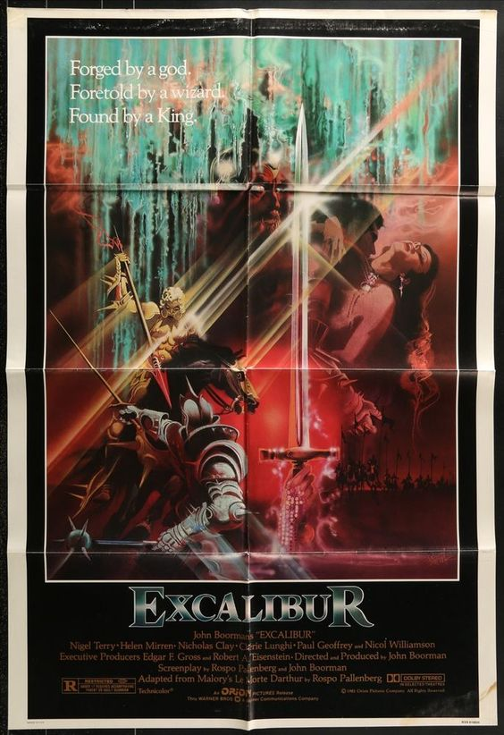

Excalibur 1981 (film)
John Boorman
https://en.wikipedia.org/wiki/Excalibur_(film)
Excalibur is a 1981 British epic medieval fantasy film directed, produced, and co-written by John Boorman that retells the legend of King Arthur and the knights of the Round Table, based on the 15th-century Arthurian romance Le Morte d'Arthur by Thomas Malory. It stars Nigel Terry as Arthur, Nicol Williamson as Merlin, Nicholas Clay as Lancelot, Cherie Lunghi as Guenevere, Helen Mirren as Morgana, Liam Neeson as Gawain, Gabriel Byrne as Uther Pendragon, Corin Redgrave as Gorlois, Duke of Cornwall, and Patrick Stewart as Leondegrance. The film is named after the legendary sword of King Arthur that features prominently in Arthurian literature. The film's soundtrack features the music of Richard Wagner and Carl Orff, along with an original score by Trevor Jones. Excalibur was shot entirely on location in Ireland, employing Irish actors and crew. It has been acknowledged for its importance to the Irish filmmaking industry and for helping launch the film and acting careers of a number of Irish and British actors, including Liam Neeson, Patrick Stewart, Gabriel Byrne and Ciarán Hinds. Film critics Roger Ebert and Vincent Canby criticized the film's plot and characters, although they and other reviewers praised its visual style. Excalibur opened at number one in the United States, eventually grossing $34,967,437 on a budget of around US$11 million to rank 18th in that year's receipts. 
Click on image to enlarge
Plot:
The sorcerer Merlin retrieves Excalibur from the Lady of the Lake for Uther Pendragon, who secures a brief alliance with the Duke of Cornwall. Merlin agrees to help Uther seduce Cornwall's wife, Igrayne, on the condition that he give Merlin whatever results from his lust. Merlin transforms Uther into Cornwall's likeness with the Charm of Making. Cornwall's daughter Morgana senses her father's mortal injury during his assault on Uther's camp. While Igrayne is fooled and Uther impregnates her, Morgana sees through it, watching Uther as Cornwall dies in battle. Nine months later, Merlin takes Uther's son Arthur. Uther pursues but is killed by Cornwall's knights. Uther thrusts Excalibur into a stone, crying that "Nobody shall wield Excalibur, but me!" and Merlin proclaims, "He who draws the sword from the stone, he shall be king." Years later, Sir Ector and his sons, Kay and Arthur, attend a jousting tournament. Sir Leondegrance wins the chance to try pulling Excalibur from the stone but fails. Kay's sword is later stolen, and Arthur pulls Excalibur from the stone while replacing it. Word spreads, and Merlin announces to the crowd that Arthur is Uther's son, the rightful ruler. Leondegrance immediately proclaims his support for the new king. While the others argue, the overwhelmed Arthur falls into a long sleep. When he wakes, Arthur helps Leondegrance, whose castle is under siege by Arthur's enemies, led by Sir Uryens. During the battle, Arthur defeats Uryens and demands Uryens knight him, handing him Excalibur. Uryens is tempted to kill him but is deeply moved by Arthur's faith and knights him. Uryens falls to his knees to declare his loyalty, which leads the others to follow suit. Arthur meets Leondegrance's daughter Guinevere and is smitten, but Merlin foresees trouble. Years later, the undefeated knight Lancelot blocks a bridge and will not move until he is defeated in single combat, seeking a king worthy of his sword. Lancelot defeats Arthur and his knights, so Arthur summons Excalibur's magic and defeats Lancelot but breaks Excalibur in the process. Arthur is ashamed of abusing the sword's power to serve his own vanity and throws the sword's remains into the lake. The Lady of the Lake restores Excalibur to the king, Lancelot is revived, and Arthur and his knights unify the land. Arthur creates the Round Table, builds Camelot, and marries Guinevere; Lancelot confesses that he has fallen in love with her too. Arthur's half-sister Morgana, a budding sorceress and still bitter towards Arthur, becomes apprenticed to Merlin. Lancelot stays away to avoid Guinevere. He meets Perceval, a peasant boy, and takes him to Camelot to become a squire. Sir Gawain, under Morgana's influence, accuses Guinevere of driving Lancelot away, forcing a duel with Gawain to defend his and Guinevere's honor. The preceding night, Lancelot is attacked by himself in a nightmare and awakens to find himself wounded by his own sword. Arthur hastily knights Perceval when Lancelot is late to the duel, but Lancelot appears just in time and defeats Gawain. Merlin heals him, and he rides out to the forest to rest. Guinevere gives in to her feelings for Lancelot, and they have sex. Meanwhile, Merlin lures Morgana to his lair to trap her, suspecting that she is plotting against Arthur. Arthur finds Guinevere and Lancelot asleep together. Heartbroken, he thrusts Excalibur into the ground between them. Merlin's magical link to the land impales him on the sword, and Morgana seizes the opportunity to trap him in a crystal with the Charm of Making. Morgana takes the form of Guinevere and seduces Arthur. Before leaving, she reveals herself to Arthur, telling him that their illegitimate son will be the next king, much to his horror. On awakening to the sight of Excalibur, Lancelot flees in shame, and Guinevere lies weeping. Morgana bears a son, Mordred, whose incestuous origin strikes the land with famine and sickness. Arthur sends his knights on a quest for the Holy Grail in hopes of restoring the land. Many of his knights die or are bewitched by Morgana. Once Mordred grows to adulthood, Morgana has a suit of golden armor made for him and casts an enchantment so that no weapon made by man can penetrate it. Mordred goes to demand that Arthur give him the crown. Arthur offers his love instead. Mordred rebuffs him, warning Arthur that he will return and take Camelot by force. Perceval narrowly escapes Morgana and encounters an old man who preaches that the kingdom has fallen because of "the sin of pride." Perceval recognizes the man as Lancelot. Perceval fails to convince Lancelot to aid Arthur, and Lancelot and his followers throw Perceval into a river. Perceval has a vision of the Grail, during which he realizes that Arthur and the land are one. Upon answering the riddle, he gains the Grail and takes it to Arthur, who drinks from it and is revitalized, as is the land. Arthur finds Guinevere at a convent, and they reconcile. She gives him Excalibur, which she has kept. Frustrated in preparation for battle against Morgana's allies, Arthur calls to Merlin, unknowingly awakening the wizard from his enchanted slumber. Merlin and Arthur have a last conversation before Merlin vanishes. The wizard then appears to Morgana as a shadow and tricks her into uttering the Charm of Making, producing a fog from the dragon's breath and exhausting her own magical powers that had kept her young. She rapidly ages, and Mordred kills her, repulsed by the sight of his once beautiful mother now reduced to a decrepit old hag. Arthur and Mordred's forces meet in battle. The fog from the dragon's breath shrouds Arthur's cavalry charge against Mordred's battle line, lending Arthur's depleted force the element of surprise against their more numerous foes. Lancelot arrives unexpectedly, tearing through Mordred's troops with savage fury and turning the tide of battle, but later collapses from his unhealed self-inflicted wound. Arthur and Lancelot reconcile, and Lancelot dies. Mordred stabs Arthur with a spear, but Arthur kills Mordred with Excalibur. Arthur tells Perceval to throw Excalibur into a pool of water, reassuring him that a new king will come and the sword will return. Though initially refusing to follow Arthur's command Perceval throws Excalibur, and the Lady of the Lake catches it. Perceval returns to see Arthur lying on a ship attended by three ladies clad in white, sailing towards Avalon.